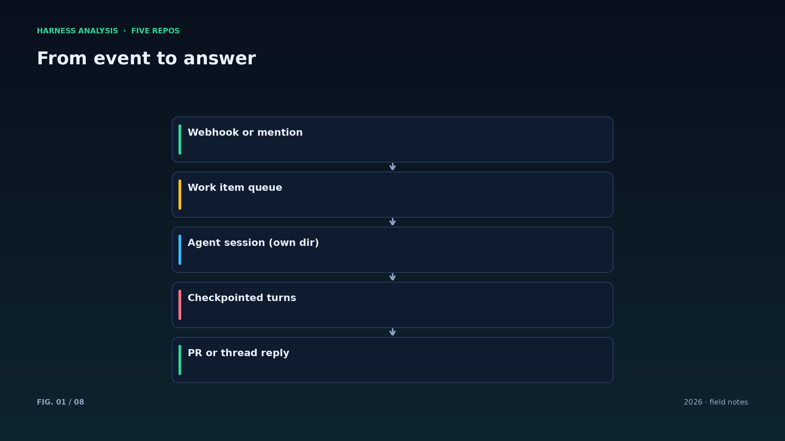
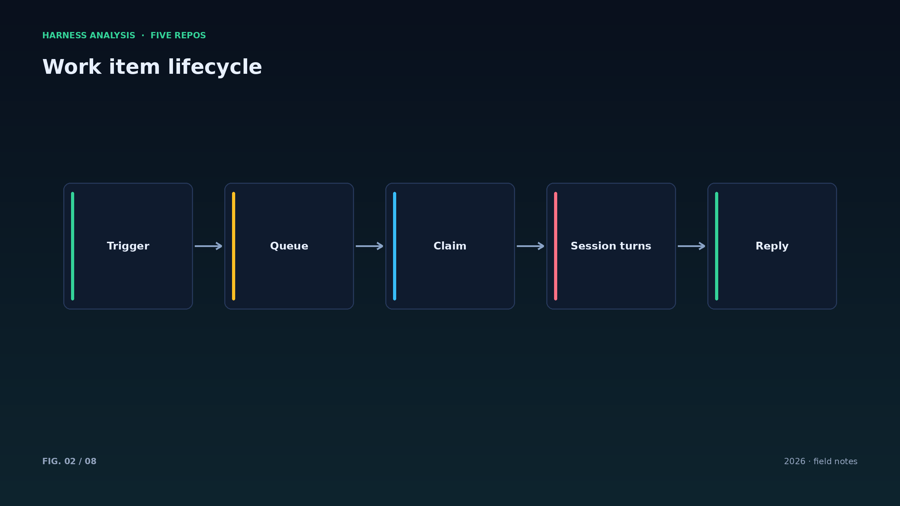
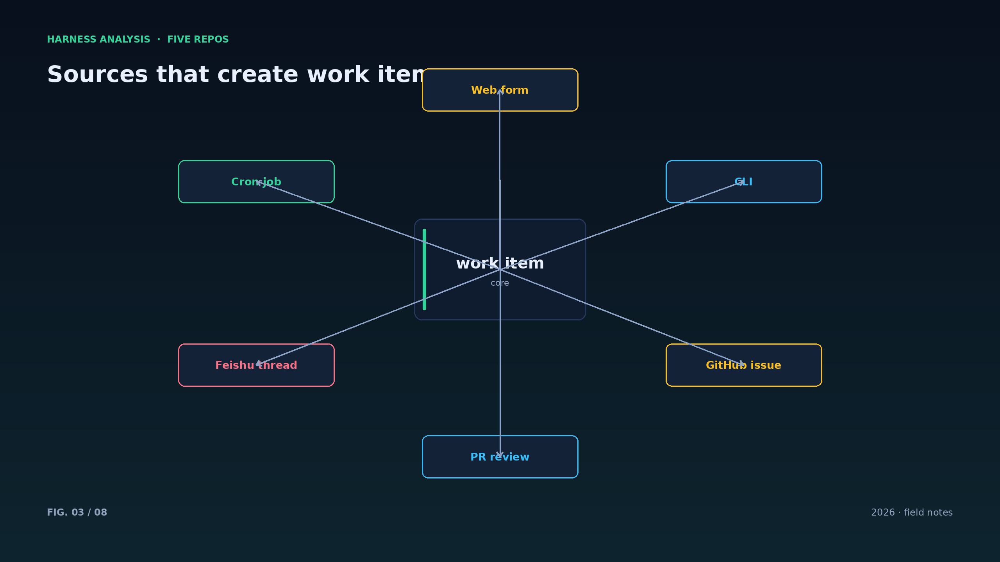
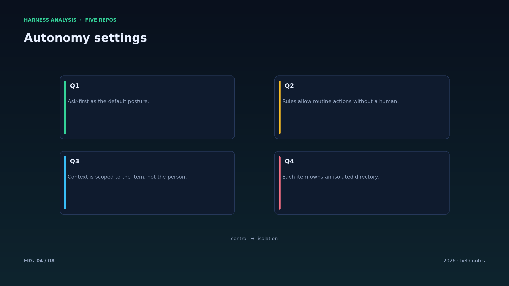
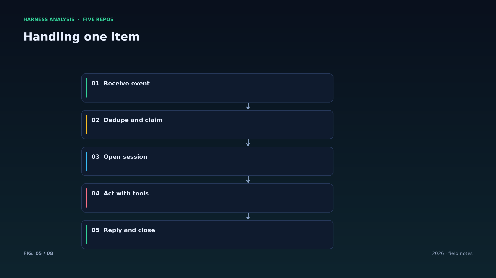
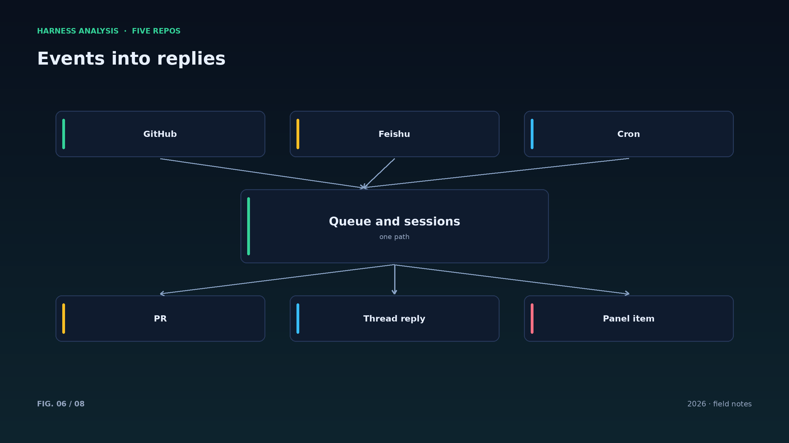
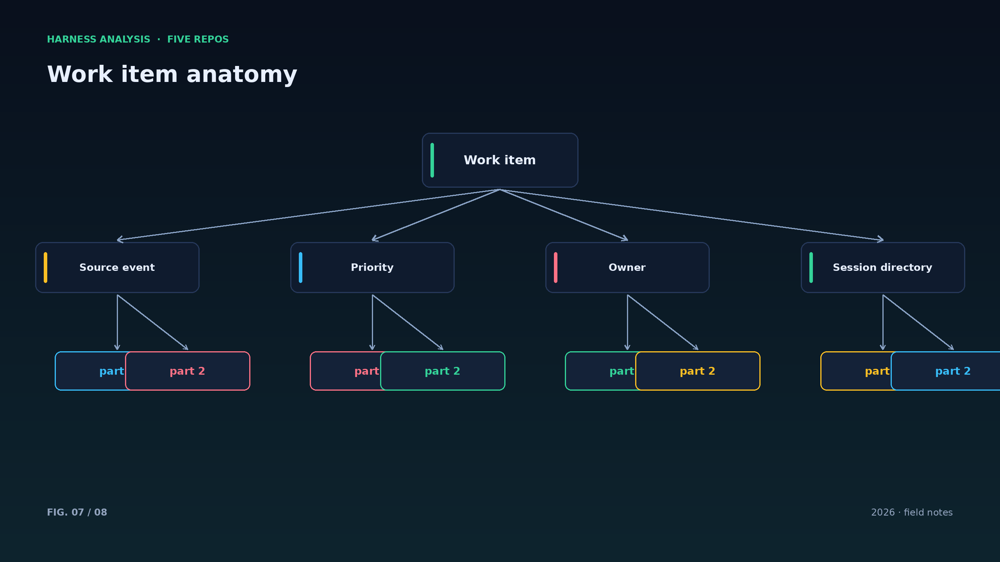
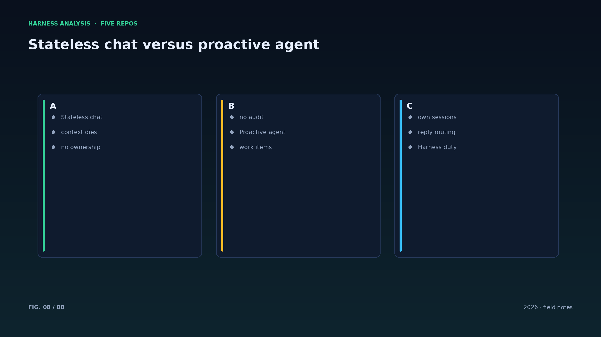

harness analysis · 02
会话与工作项：superagent 把“一次任务”做成了什么
Sessions and Work Items: What dsh-superagent Makes of a Task
工作项是主动型 agent 的基本单位：它携带来源、归属与回复路径。这一篇拆开 superagent 的工作项模型，并对照其他项目的会话设计。
在 dsh-superagent 里，一次请求先变成工作项，再变成会话：工作项记录它从哪来（GitHub issue、PR、飞书消息）、归谁负责、回复发往哪个线程；会话则是实际执行的地方，拥有独立目录与上下文。
这种拆分的好处是恢复与审计的单位清晰：工作项是业务侧的账本，会话是工程侧的现场。出问题时你既能回答“这件事是谁要求的”，也能回答“agent 当时看到了什么”。
对照其他项目：deepseek-harness 的插件内核不规定工作项形态；Octop 用统一的处理器接收 Web、IM、cron 三个入口；opencode 把会话做成可被多个客户端共享的服务。三种设计里，工作项模型最贴近“人机协作的工单系统”。
一个容易忽略的细节是回复路由：工作项必须记住原始线程，否则 agent 干完活不知道该回到哪里。这看似产品细节，实则是会话模型的一部分——上下文不仅在模型里，也在“回到哪里说话”里。
检查点的粒度是权衡：每一步都存会让写入放大，存得太稀又会丢太多上下文。经验值是在“工具调用前 + 模型调用后”各存一次，兼顾恢复精度与成本。
API 设计上建议把工作项与会话拆成两个对象：业务字段（来源、优先级、责任人）与工程字段（目录、上下文、预算）分离，查询与审计都会清爽很多。
工作项的生命周期最好显式化：queued、claimed、running、waiting_human、done、failed。每个状态迁移写事件，面板与审计都从这里读，而不是靠推断。
会话目录的命名建议带工作项 ID 与日期：后期排查时，目录名就是一条索引；把所有会话平铺在一个目录里，是运维灾难的开始。
一个反模式是“一个 agent 服务所有工作项”：上下文互相污染、权限无法按任务收窄。superagent 一工作项一会话的做法，本质上是把隔离做在业务层。
Architecture figures








ENGLISH
Sessions and Work Items: What dsh-superagent Makes of a Task
A work item is the unit of proactive agency: it carries provenance, ownership and a reply path. This piece dissects the model and compares it with session designs elsewhere.
In dsh-superagent a request first becomes a work item, then a session. The work item records where it came from (a GitHub issue, a PR, a Feishu message), who owns it, and which thread the answer goes back to. The session is where the work happens, with its own directory and context.
The split makes recovery and audit units crisp: the work item is the business ledger, the session is the engineering scene. When something fails you can answer both "who asked for this" and "what did the agent see".
Compare the alternatives: the deepseek-harness plugin kernel does not prescribe work-item shape; Octop funnels Web, IM and cron into one processor; opencode turns a session into a service shared by many clients. Among them, the work-item model is closest to a human-agent ticketing system.
A detail that is easy to miss: reply routing. The work item must remember the original thread, or the agent finishes the job without knowing where to speak. That is not a product nicety — it is part of the session model, because context lives not only in the model but also in where the answer belongs.
Checkpoint granularity is a trade-off: saving every step amplifies writes, saving too rarely loses context. A practical default is one checkpoint before each tool call and one after each model call.
Make the work-item lifecycle explicit: queued, claimed, running, waiting_human, done, failed. Every transition emits an event, and both the panel and the audit read from that stream instead of guessing.
Name session directories with the work-item ID and date: during incident review, the directory name is an index. Flattening every session into one folder is how operations disasters start.